00이 매뉴얼에 대하여
단지내 우수·오수 배관 산정 시스템는 단지 안 우수관 · 오수관의 설계유량을 합리식과 계획오수량으로 구하고, Manning 식 만류 통수능으로 관경을 고른 뒤 최소관경 · 유속을 국가건설기준 조항대로 판정해 A4 결과보고서로 정리하는 웹도구입니다.
| 항목 | 내용 |
|---|---|
| 대상 프로그램 | 단지내 우수·오수 배관 산정 시스템 MANMIN Ver-5.1(v5.1.0) |
| 접속 주소 | manminkim-eng.github.io/civil-engineering-piping |
| 매뉴얼 판 | Ver-5.1 (화면 표기와 같은 판 번호, 초판) · 2026-10-17 · 작성 김만민 건축사(㈜대성건축사사무소) |
| 내려받기 | PDF(A4) · 산정 시스템 열기 |
| 근거 | KDS 61 40 00 관로시설 설계기준 · KDS 61 10 00 하수도설계 일반사항 (2025. 10. 1. 개정) — 국가건설기준센터(kcsc.re.kr) 원문 대조(2026-10-17) |
| 범위 | 자연유하 원형관의 관경 · 유속 판정 — 하수도정비기본계획의 강우강도식 · 원단위, 지자체 조례, 펌프 압송 · 맨홀 · 연결관 상세는 따로 확인합니다 |
01한눈에 보기
설치 없이 브라우저에서 바로 열리는 단일 페이지(PWA)입니다. 입력값은 브라우저 안에서만 계산하고 서버로 보내지 않습니다.
1-1. 화면 구성
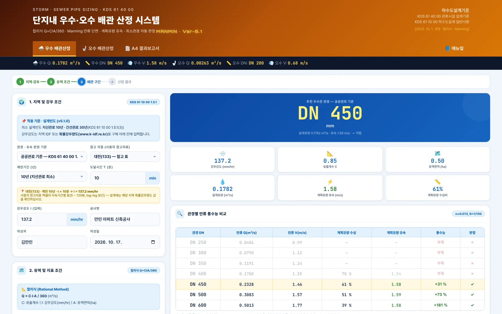
12345- 1탭 3개
- 2📘 매뉴얼
- 3요약 바
- 4입력
- 5결과
1-2. 탭 · 판정 기준
| 구분 | 내용 |
|---|---|
| 🌧️ 우수 배관산정 | 강우 · 유역 조건 → 계획우수량 → 추천 관경 · 유속 판정 |
| 🚽 오수 배관산정 | 세대 · 오수량 조건 → 계획시간최대오수량 → 추천 관경 · 유속 판정 |
| 📄 A4 결과보고서 | 우수 · 오수 결과와 적용 조항 — 인쇄 / PDF · JPG 저장 |
| 공공관로 기준 | KDS 61 40 00 1.3 유속 · 2.3 최소관경 — 공공하수관로에 준해 설계할 때 |
| 배수설비 기준 | KDS 61 40 00 15.2 — 개인하수도인 배수설비(부지 안 배수관)로 설계할 때 |
021분 따라하기
예제 A — 만민 아파트 신축공사(입력값은 예시).
- ① 판정 기준우수 · 오수 모두 「공공관로 기준」.
- ② 강우참고 지점 「대전(133)」 · 재현 10년 · t = 10분 → I = 137.2 mm/hr(직접 입력도 가능).
- ③ 유역A = 0.5 ha · C = 0.85 · 경사 1/150 · 철근콘크리트관 n = 0.013 · 여유율 10 %.
- ④ 우수 결과「우수 배관 계산 실행」 → 설계유량 0.1782 m³/s → DN 450 · 계획우수량 유속 1.58 m/s(0.8 ~ 3.0 ✓).
- ⑤ 오수200세대 × 2.5인 · 1인1일최대 250 ℓ · 지하수량 10 % · 변동계수 1.5 · 경사 1/100 · n = 0.011 · 여유율 10 % → 계획1일최대 137.5 m³/일 → DN 200 · 유속 0.68 m/s(0.6 ~ 3.0 ✓).
- ⑥ A4 결과보고서「📄 A4 결과보고서」 탭 → 「인쇄 / PDF 저장」 또는 「JPG 저장」.
03화면별 기능
3-1. 머리 · 매뉴얼
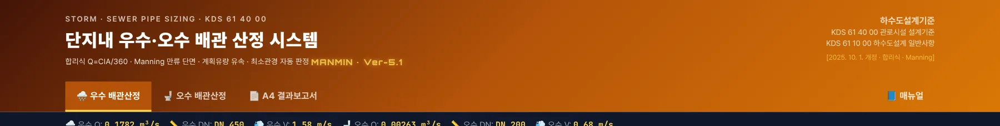
1234- 1도구 이름 · Ver-5.1
- 2📘 매뉴얼 — 탭 막대 끝
- 3KDS 61 40 00 · 61 10 00 (2025. 10. 1.)
- 4탭 3개
탭 막대 오른쪽 끝의 「📘 매뉴얼」은 이 문서를 새 창으로 엽니다(온라인 전용). 오른쪽 근거 블록은 적용 기준과 개정일입니다.
3-2. 지역 · 강우 조건
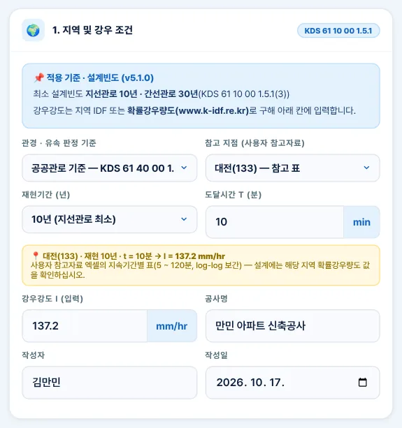
123456- 1판정 기준 — 공공관로 / 배수설비
- 2참고 지점 — 대전 · 임실
- 3재현기간 — 지선 10년
- 4도달시간 t
- 5참고 표 값
- 6강우강도 I 입력
| 칸 | 쓰임 |
|---|---|
| 판정 기준 | 공공관로(1.3 · 2.3) / 배수설비(15.2) — 최소관경 · 유속 범위가 바뀜(4-7) |
| 참고 지점 | 사용자 참고자료 엑셀의 대전(133) · 임실(244) 지속기간별 표 — 5 ~ 120분 사이는 log-log 보간 |
| 재현기간 | 지선관로 최소 10년 · 간선관로 30년(KDS 61 10 00 1.5.1(3)) |
| 강우강도 I | 설계에는 해당 지역 IDF 또는 확률강우량도(www.k-idf.re.kr) 값을 입력 |
3-3. 유역 · 지표 조건
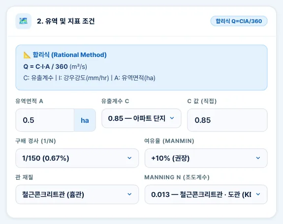
123456- 1유역면적 A
- 2유출계수 C
- 3관로 경사
- 4여유율 (MANMIN)
- 5관 재질
- 6조도계수 n — KDS 표준
| 칸 | 쓰임 |
|---|---|
| 유역면적 A | ha 단위 — 합리식 Q = C·I·A/360 |
| 유출계수 C | 토지이용도별 기초유출계수로부터 총괄유출계수(1.5.1(2)) — 목록은 MANMIN 참고값 |
| 여유율 | MANMIN 적용 — 설계유량 = 계획우수량 × (1 + 여유율) |
| 조도계수 n | 철근콘크리트관 · 도관 0.013 / 경질염화비닐관 · 강화플라스틱복합관 0.011(KDS 61 40 00 1.2(2)②) |
3-4. 배관 구간
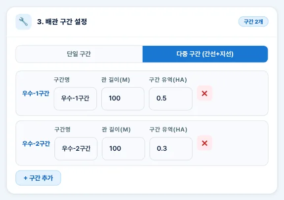
123- 1단일 · 다중 구간
- 2구간명 · 길이 · 유역
- 3구간 추가
다중 구간은 구간마다 상류 유역면적(우수) · 세대수(오수)를 넣어 구간별 관경을 따로 판정합니다. 경사 · 조도계수 · 판정 기준은 공통입니다.
3-5. 우수 결과
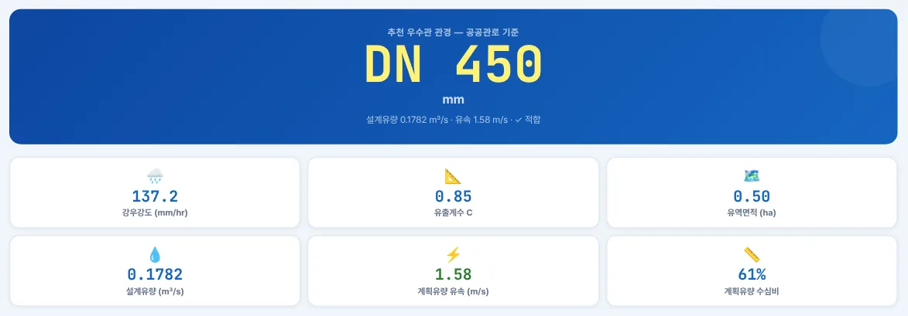
1234- 1추천 관경 DN 450
- 2설계유량
- 3계획유량 유속
- 4계획유량 수심비
추천 관경은 최소관경 이상에서 만류 통수능이 설계유량 이상인 가장 작은 규격입니다. 유속은 계획우수량이 흐를 때의 수심(예제 A 수심비 61 %)에서 구합니다.
3-6. 관경별 비교표
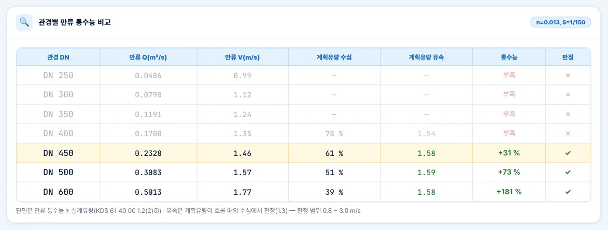
12- 1추천 — 만류 ≥ 설계유량
- 2최소관경부터 비교
3-7. 우수 계산 과정
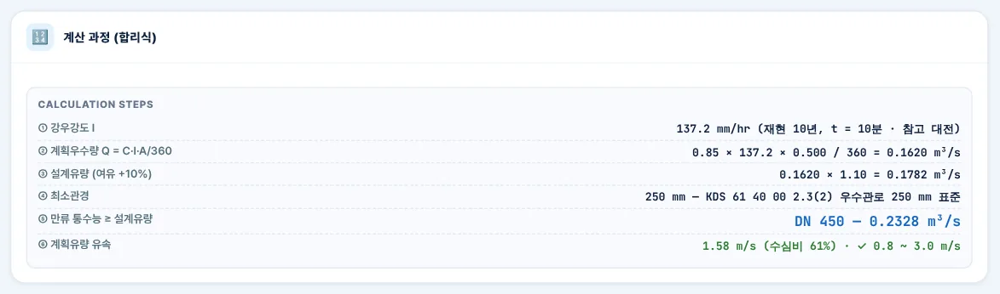
1234- 1합리식 Q = C·I·A/360
- 2최소관경 — 근거 조항
- 3만류 통수능 ≥ 설계유량
- 4계획유량 유속 판정
3-8. 사례 — 배수설비 기준
- 1배수설비 기준
- 2유속 1.5 m/s 초과 — 검토
배수설비 기준은 유속 범위가 0.6 ~ 1.5 m/s(15.2(3))라 예제 A의 1.58 m/s는 「최대 초과」로 나옵니다. 경사를 완만하게 하거나 관로를 나눠 검토하십시오.
3-9. 계획 오수량
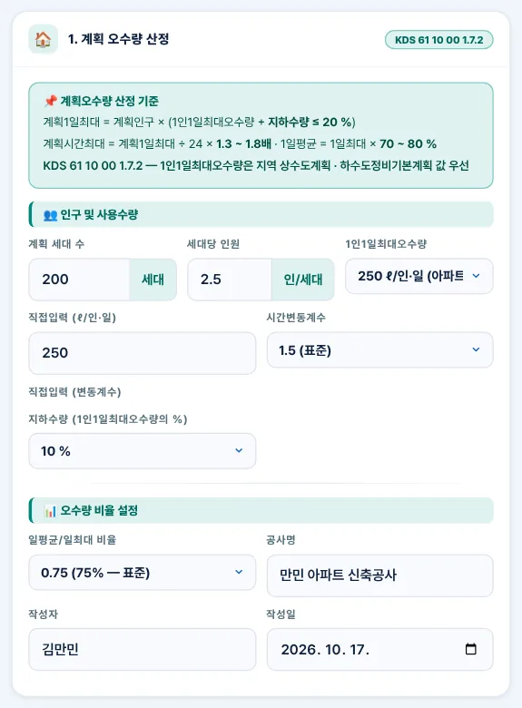
123456- 1세대 수
- 2세대당 인원
- 31인1일최대오수량
- 4시간변동계수 1.3 ~ 1.8
- 5지하수량 ≤ 20 %
- 6일평균 / 일최대
| 칸 | 쓰임 |
|---|---|
| 1인1일최대오수량 | 지역 상수도계획 · 하수도정비기본계획 값 우선(KDS 61 10 00 1.7.2(1)) |
| 지하수량 | 1인1일최대오수량의 20 % 이하(1.7.2(3)) — 계획1일최대에 더함 |
| 시간변동계수 | 계획시간최대 = 1일최대 ÷ 24 × 1.3 ~ 1.8(1.7.2(6)) |
| 일평균 비율 | 1일평균 = 1일최대 × 70 ~ 80 %(1.7.2(5)) |
3-10. 오수 배관 조건
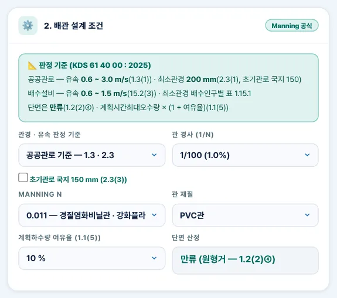
12345- 1판정 기준 · 국지 150
- 2관 경사
- 3조도계수 0.011
- 4여유율 (1.1(5))
- 5만류 단면
| 칸 | 쓰임 |
|---|---|
| 판정 기준 | 공공관로 — 최소 200 mm(초기관로 국지 150 선택) / 배수설비 — 배수인구별 표 1.15.1 |
| 여유율 | 계획하수량에 여유율(1.1(5)) — 설계유량 = 시간최대 × (1 + 여유율) |
| 단면 산정 | 원형거는 만류로 단면 결정(1.2(2)④) — v5.0의 「수심 60 %」 방식 폐지 |
3-11. 오수 결과 · 계산 과정
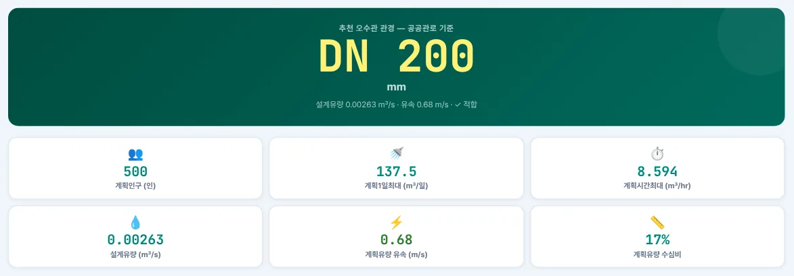
1234- 1추천 관경 DN 200
- 2계획1일최대
- 3계획시간최대
- 4계획유량 유속
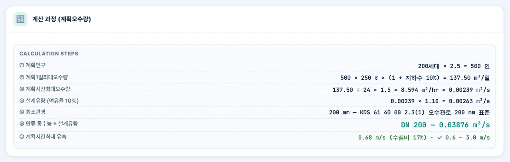
1234- 1지하수량 포함
- 2여유율
- 3최소관경 근거
- 4유속 판정
3-12. 사례 — 경사 1/200
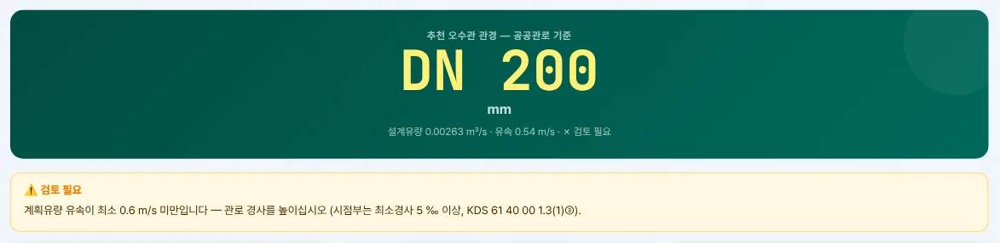
12- 11/200 — 유속 미달
- 2경사 상향 · 시점부 5 ‰
경사만 1/200으로 낮추면 계획시간최대 유속이 0.54 m/s로 최소 0.6 m/s에 못 미칩니다. 관경을 키우면 오히려 유속이 더 떨어지므로 경사를 높입니다(시점부는 최소경사 5 ‰ 이상, 1.3(1)③).
3-13. A4 결과보고서
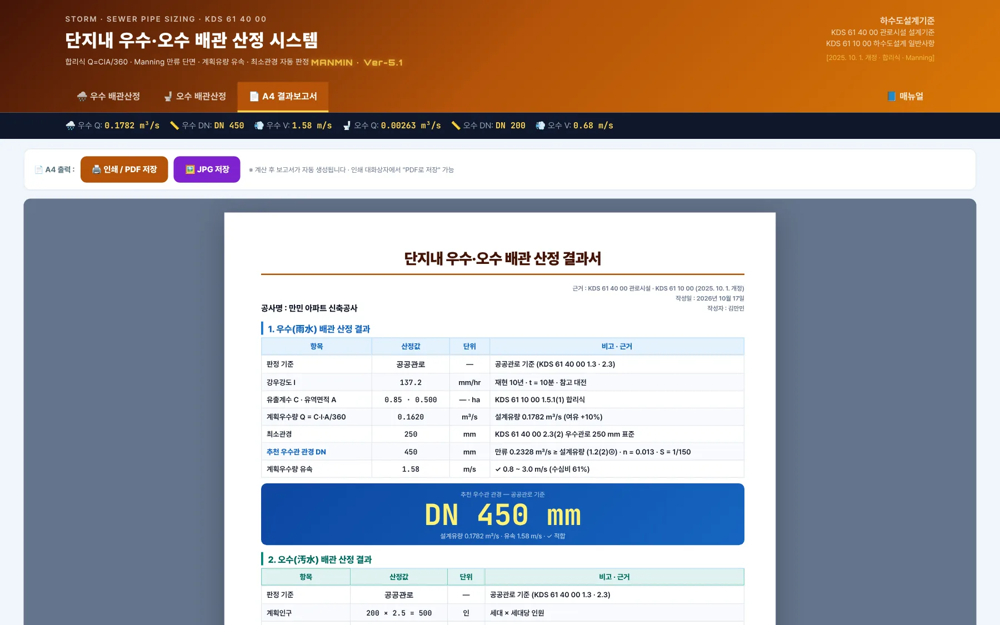
123- 1A4 출력 막대
- 2인쇄 · PDF
- 3JPG 저장
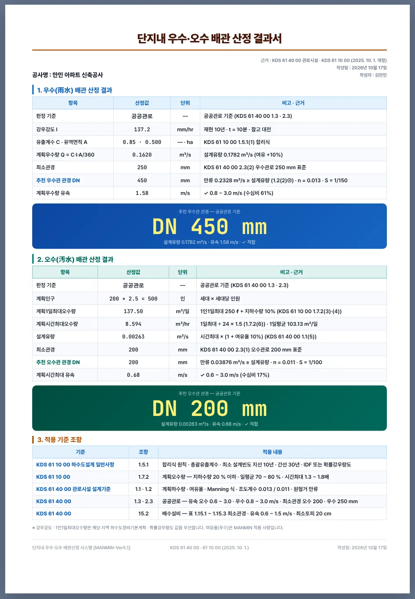
3-14. 설계기준 안내창
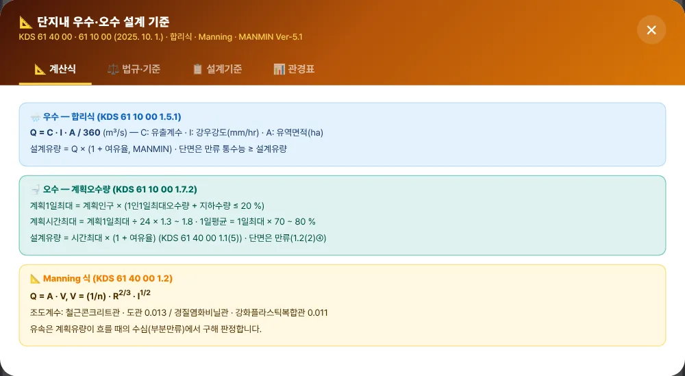
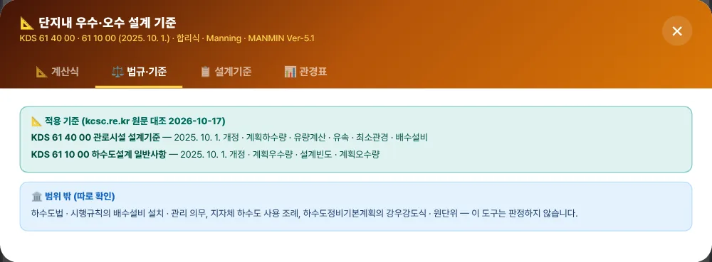
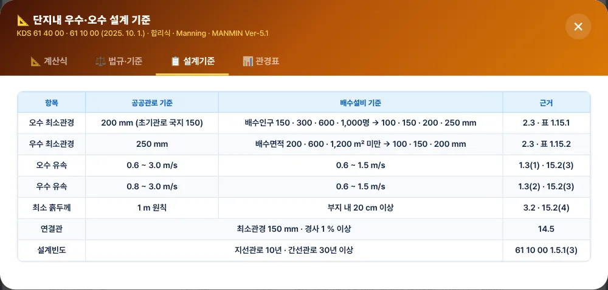
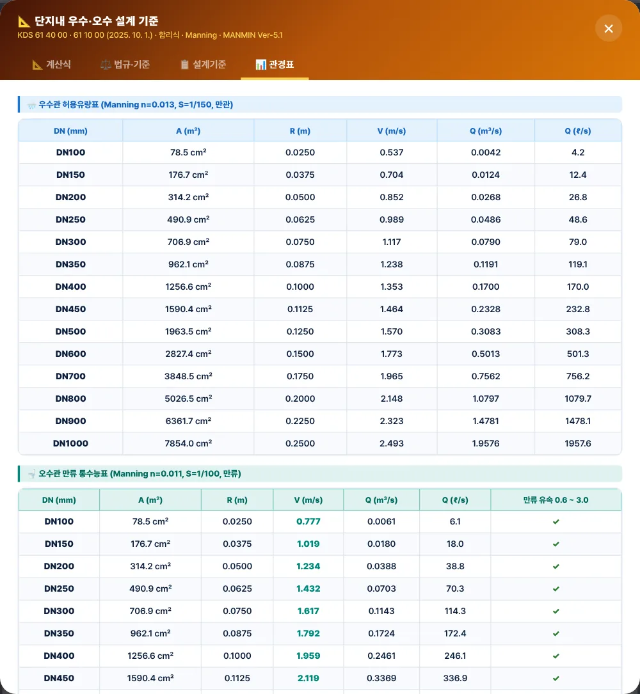
오른쪽 아래 「📐 설계기준」 버튼으로 엽니다.
3-15. 휴대전화 화면
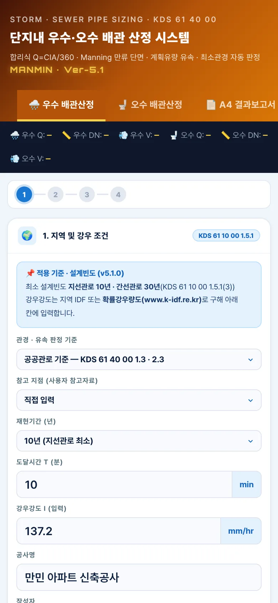
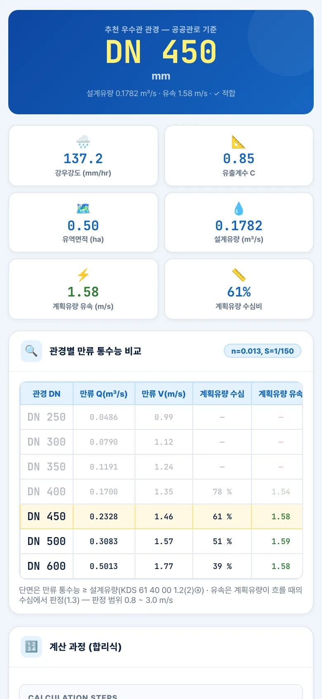
04기준 해설
4-1. 근거 체계
| 기준 | 이 도구에서 쓰는 조항 |
|---|---|
| KDS 61 10 00 하수도설계 일반사항 | 2025. 10. 1. 개정 — 1.5.1 계획우수량(합리식 · 유출계수 · 설계빈도 · 강우강도) · 1.7.2 계획오수량 |
| KDS 61 40 00 관로시설 설계기준 | 2025. 10. 1. 개정 — 1.1 계획하수량 · 1.2 유량계산 · 1.3 유속 및 경사 · 2.3 최소관경 · 15 배수설비 |
| 출처 | 국가건설기준센터 kcsc.re.kr 원문 대조(2026-10-17) |
4-2. 계획우수량 · 설계빈도
| 조항 | 내용 |
|---|---|
| 1.5.1(1) | 최대계획우수유출량은 합리식 원칙 — 수정합리식 등도 사용 가능 |
| 1.5.1(2) | 유출계수는 토지이용도별 기초유출계수로부터 총괄유출계수를 구하는 것이 원칙 |
| 1.5.1(3) | 최소 설계빈도 지선관로 10년 · 간선관로 30년 · 빗물펌프장 30년(강화 시 30 · 50 · 50년) — 20년 이상 자료 지역은 IDF, 부족 · 미계측은 확률강우량도 |
| 1.5.1(4) | 도달시간 = 유입시간 + 유하시간 |
4-3. 계획오수량
| 조항 | 내용 |
|---|---|
| 1.7.2(3) | 지하수량은 1인1일최대오수량의 20 % 이하 |
| 1.7.2(5) | 계획1일평균오수량은 계획1일최대오수량의 70 ~ 80 % 표준 |
| 1.7.2(6) | 계획시간최대오수량은 계획1일최대오수량의 1시간당 수량의 1.3 ~ 1.8배 표준 |
| 61 10 00 1.6.1(1) | 오수관로는 계획시간최대오수량을 기준으로 계획 |
4-4. Manning · 조도계수 · 만류
| 조항 | 내용 |
|---|---|
| 1.2(2)② | 조도계수 — 철근콘크리트관 · 도관 0.013, 경질염화비닐관 · 강화플라스틱복합관 0.011 표준 |
| 1.2(2)④ | 관로 단면적은 유량과 경사로 구하며 수심 결정 시 원형거는 만류 |
| 1.1(5) | 오수관로 관경 결정 시 지역실정에 따라 계획하수량에 여유율을 둘 수 있음 |
| MANMIN 적용 | 유속은 계획유량이 흐를 때의 수심(부분만류, 이분법)에서 구해 1.3 범위와 비교 |
4-5. 유속 기준
| 구분 | 기준 |
|---|---|
| 공공 오수관로 | 계획시간최대오수량에 대해 0.6 ~ 3.0 m/s(1.3(1)①) — 시점부 최소유속 확보 불가 시 최소경사 5 ‰(1.3(1)③) |
| 공공 우수 · 합류관로 | 계획우수량에 대해 0.8 ~ 3.0 m/s(1.3(2)①) |
| 배수설비 | 관내 유속 0.6 ~ 1.5 m/s가 되도록 경사(15.2(3)) |
4-6. 최소관경
| 구분 | 최소관경 |
|---|---|
| 공공 오수관로 | 200 mm 표준 — 장래 증가 없으면 초기관로에 국지적으로 150 mm 제한 사용(2.3(1)·(3)) |
| 공공 우수 · 합류관로 | 250 mm 표준(2.3(2)) |
| 배수설비 오수관 (표 1.15.1) | 배수인구 150명 이하 100 · 300명 이하 150 · 600명 이하 200 · 1,000명 이하 250 mm 이상 |
| 배수설비 우수 · 합류관 (표 1.15.2) | 배수면적 200 ㎡ 미만 100 · 600 ㎡ 미만 150 · 1,200 ㎡ 미만 200 mm 이상 · 1,200 ㎡ 이상은 지름 또는 개수 증가(MANMIN: 250 mm 이상 + 수리계산) |
| 배수량이 특히 많은 곳 (표 1.15.3) | 1,000 ㎥/일 미만 150 · 2,000 미만 200 · 4,000 미만 250 · 6,000 미만 300 mm 이상 |
| 연결관 | 최소 150 mm · 경사 1 % 이상(14.5) |
4-7. 공공관로 · 배수설비 선택
배수설비는 개인하수도의 일종(15.1)입니다. 단지 안 관로를 배수설비로 설치하면 「배수설비 기준」, 공공하수관로로 이관하거나 공공관로 기준으로 설계하라는 협의가 있으면 「공공관로 기준」을 고릅니다. 예제 A 오수관은 두 기준 모두 DN 200이지만, 우수관은 배수설비 기준에서 유속 상한(1.5 m/s)에 걸립니다.
4-8. v5.1.0 정정 (2026-10-17)
| 항목 | 기존(v5.0) | 정정(v5.1.0) |
|---|---|---|
| 근거 표기 | 「KDS 61 10 00 (하수도 설계기준) · 2022~2025 개정」 · 주택건설기준 제43조 | KDS 61 40 00 관로시설 · 61 10 00 하수도설계 일반사항(2025. 10. 1.) — 제43조는 주택 안 급 · 배수 배관 규정이라 삭제 |
| 판정 기준 | 유속 0.6 ~ 3.0 · 최소관경 우수 200 · 오수 150 고정 | 공공관로 / 배수설비 선택(4-7) |
| 강우강도 | 시군별 Talbot 계수(출처 미상, 대전 5년 · 10분 69.8 mm/h — 참고자료 123.9 대비 −44 %) | 직접 입력 · 참고 지점 대전 · 임실 |
| 설계빈도 기본값 | 5년 | 10년(지선관로 최소) |
| 오수 단면 | 수심 60 % 부분만관 | 만류 + 여유율 · 지하수량 추가 |
| 유속 판정 | 만류(또는 수심 60 %) 유속 | 계획유량 수심에서의 유속 |
| 조도계수 라벨 | 0.013 = PVC관 | 0.013 철근콘크리트관 · 도관 / 0.011 경질염화비닐관 · 강화플라스틱복합관 |
규칙을 파이썬으로 따로 옮긴 계산과 앱 엔진을 무작위 · 경계값 20,000건으로 대조해 불일치 0, 일부러 넣은 오류 4종을 모두 검출했습니다(manual/_tools/verify_cep.py).
05실무 작업 방법
5-1. 검토 절차
- ① 기준 확정공공관로 · 배수설비 중 어느 기준으로 설계할지 인허가 협의 · 지자체 기준으로 정함.
- ② 강우해당 지역 하수도정비기본계획의 강우강도식 또는 확률강우량도 값 · 설계빈도(지선 10년 이상) 확인.
- ③ 유역 · 인구배수구역별 면적 · 총괄유출계수 · 세대수 · 원단위를 정리.
- ④ 산정구간별로 계산 — 유속 ✗가 나오면 경사 · 관로 분할을 조정.
- ⑤ 상세맨홀 간격 · 흙두께 · 연결관(150 mm · 1 %) · 관 기초는 KDS 61 40 00 3 · 4 · 7 · 14로 확인.
- ⑥ 기록A4 결과보고서를 설계도서 · 인허가 검토 자료에 첨부.
5-2. 문제 해결 · FAQ
| 증상 | 해결 |
|---|---|
| 예전 결과와 관경이 달라요 | v5.1.0에서 기준을 원문대로 바꿨습니다(4-8) — 다시 산정하십시오 |
| 유속이 「최소 미달」로 나와요 | 관경을 키우면 더 느려집니다 — 경사를 높이십시오 |
| 배수설비 기준에서 우수관이 「최대 초과」예요 | 배수설비는 1.5 m/s가 상한 — 경사를 완만하게 하거나 공공관로 기준 협의 |
| 강우강도 지역 목록이 없어졌어요 | 출처가 없는 계수표라 삭제했습니다 — 확률강우량도(k-idf.re.kr) 값을 입력하십시오 |
| 화면이 예전 판이에요 | 새로 고침(Ctrl+F5) — v5.1.0부터 캐시 이름이 tobog-v5.1.0입니다 |
부록
A1. 버전 변경 내역
| 버전 | 내용 |
|---|---|
| Ver-5.1 · v5.1.0 (2026-10-17) | KDS 61 40 00 · 61 10 00 원문 대조 판정 엔진 CEPENG · 두 기준 선택 · 강우강도 직접 입력 · 오수 만류 + 여유율 · 「📘 매뉴얼」 · sw v5.1.0 |
| Ver-5.0 (2026-09-03 ~ 09-05) | MANMIN 디자인 통일 · A4 규격 · JPG 저장 · sw 정비 |
| Ver-2.0 | 초판 PWA |
A2. 용어
| 용어 | 뜻 |
|---|---|
| 계획우수량 | 합리식 Q = C·I·A/360으로 구한 관로별 우수유출량 |
| 계획시간최대오수량 | 계획1일최대오수량의 1시간당 수량 × 1.3 ~ 1.8 |
| 만류 | 관 단면이 물로 가득 찬 상태 — 원형관 단면 결정 기준 |
| 수심비 | 관 안 수심 ÷ 관경 — 계획유량이 흐를 때의 값 |
| 배수설비 | 건물 · 부지 안 하수를 공공하수도로 보내는 개인하수도 시설(KDS 61 40 00 15.1) |
| 확률강우량도 | 환경부 · 한국건설기술연구원 확률강우량 정보(www.k-idf.re.kr) |